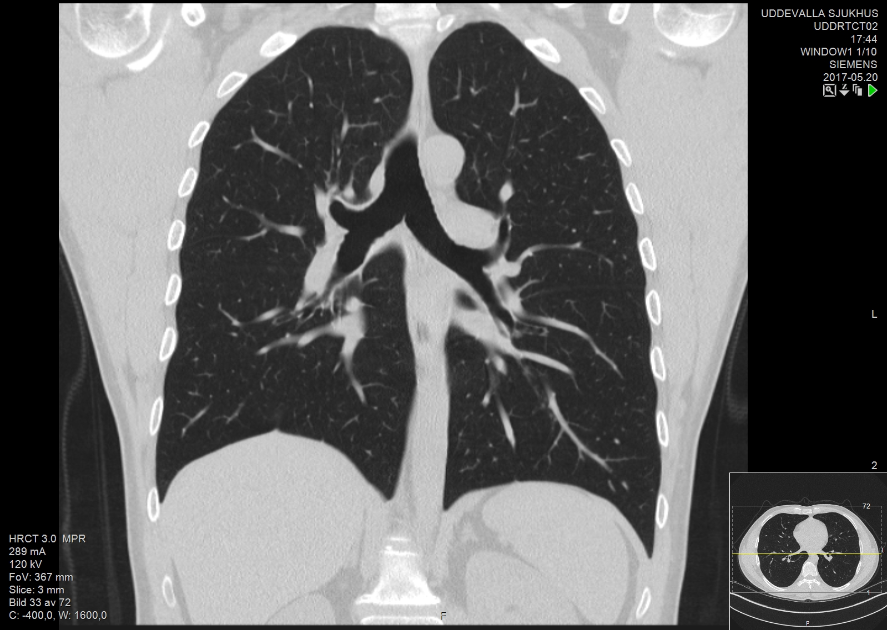
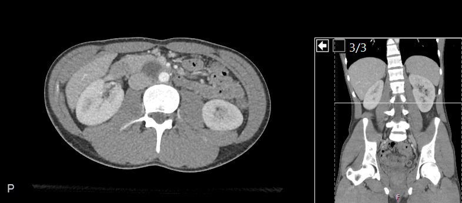
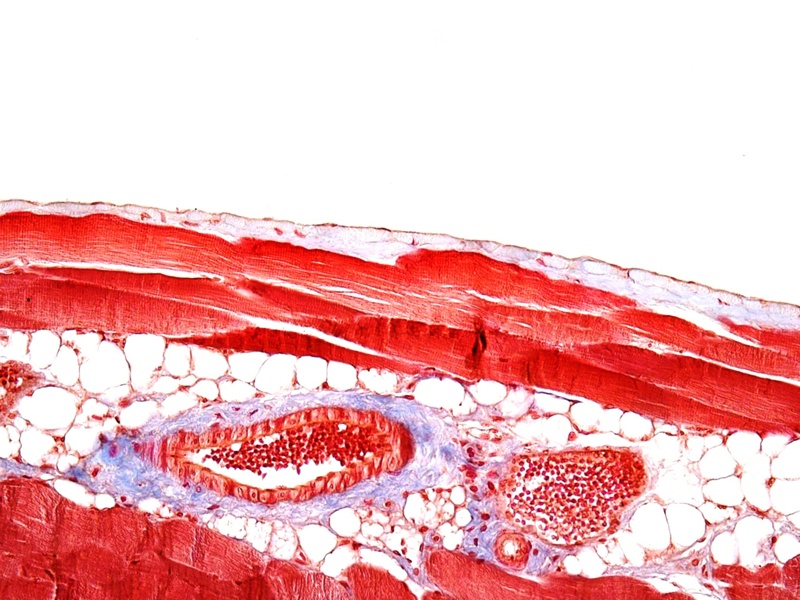

Compartments and linings
Three independent observations connect body compartments with tissue linings: a coronal thorax CT, an axial abdominal CT and a section of parietal peritoneum. Each image answers a different anatomical question.
Thoracic region and diaphragm
Orientation: patient right is image-left; patient left is image-right. Superior is above and inferior below. The source’s small locator pane is retained.

Reading key: the two lung fields flank the central mediastinal region; the domed diaphragm marks the lower thoracic boundary. This selected plane does not separately resolve the pleural membranes or their normally thin fluid film.
Coronal CT from a 37-year-old male; source slice thickness 3 mm. Imaging contrast locates gross structures; the dark lung fields are not a drawn pleural-fluid cavity. The thorax and abdomen CTs show different people.
Mikael Häggström (2017), owning coronal CT record · CC0 1.0. Complete 1598 × 1136 source JPEG unchanged; no anatomical overlay. Series and consent context.
.jpg){kind=link}
Posterior position of the kidneys
Axial display: patient right is image-left; anterior is above and posterior below (source P marker). The narrow right pane is a separate coronal locator.

Reading key: locate the vertebral body centrally toward the back, then the renal tissue on either side. The kidneys occupy a posterior position relative to the more anterior abdominal viscera. No membrane boundary is traced on this CT.
Kidneys are retroperitoneal: they lie behind the parietal peritoneum rather than inside the peritoneal cavity. This positional relationship is anatomical interpretation; the thin peritoneal layers and fluid film are not separately resolved here.
Mikael Häggström (2019), owning axial CT record, file126 · CC0 1.0. Source: 21-year-old male, contrast CT, 3 mm slice thickness. Complete 786 × 346 PNG unchanged, including locator; no resampled file or anatomical overlay.

The parietal side of the lining
Image orientation: the tissue surface is along the upper, sloping edge. Body side, species, stain and physical field width are not supplied by the source.

Reading key: the owning caption identifies an upper mesothelial lining over connective tissue, with muscle, fat and vessels deeper in the section. These are preparation colors; the stain is unspecified.
This specimen shows the parietal side alone. The white area above the tissue does not demonstrate a measured serous-fluid space, visceral peritoneum or an organ surface.
Guada Tirma (2015), Pertoneum, owning record · CC BY-SA 4.0. Original 2048 × 1536 JPEG unchanged; no crop, recoloring or anatomical overlay. Original image licence retained; no source endorsement implied.

The anatomical relationship, stated separately
For an intraperitoneal organ, the anatomical order from the body wall is:
Abdominal wall → parietal peritoneum → normally thin potential space containing lubricating fluid → visceral peritoneum → organ surface.
This is an anatomy model, not a continuous interface demonstrated by these three images. The posterior kidney position is distinct from an intraperitoneal organ relationship. Anatomical terminology and serous membranes: OpenStax §1.6.